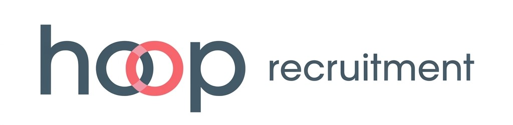
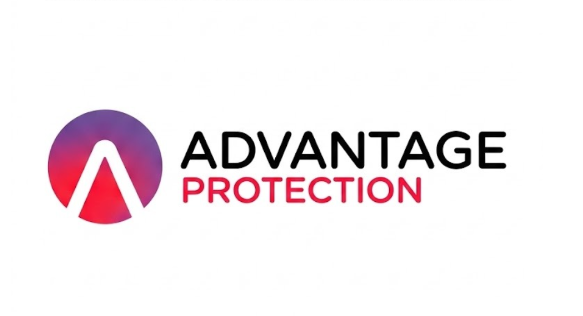
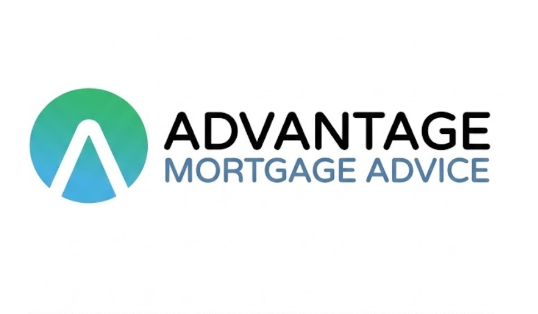

New starters
New to self-employment
Ideal for those who have recently transitioned out of permanent employment and want to understand the different ways to protect themselves financially now that standard workplace benefits and sick pay are gone.



Official Partnership · Service Summary
Hoop Recruitment has officially partnered with Advantage Financial Solutions to give every candidate direct, exclusive access to expert, independent mortgage and protection advice. This partnership connects locum professionals with specialists who understand how your career operates and how you earn.
Because independent working means you do not receive employer-funded sick pay or death-in-service benefits, a specialist advisory service is available to help you explore how to protect yourself and your family financially. This includes looking at ways to maintain a reliable income if an injury or illness stops you from working, ensuring your home and mortgage are covered if the unexpected happens, and providing lump-sum financial security for your loved ones.
Because being self-employed or working on a contract basis can sometimes make securing property financing feel complicated through high-street lenders, a specialist mortgage service is available to help navigate the market. This includes understanding how lenders assess variable or non-traditional earnings, and helping you explore your options whether you are buying your first home, moving up the property ladder, or looking at a remortgage.
As a self-employed professional, navigating financial security without corporate employee benefits requires a tailored approach.
Through our partnership with Advantage Financial Solutions, you have access to expert protection advice from Laurence, a specialist financial adviser dedicated to helping locums and self-employed individuals protect their income and families.
Book your Protection appointment

Specialist protection adviser
Laurence is the dedicated protection adviser for Hoop candidates. He'll guide you through every stage of the advisory process — from the initial informal call, through tailored market research and recommendations, to application and underwriting support — making sure your cover is set up correctly and remains affordable and comprehensive as your circumstances change.
Who this service is most useful for
New starters
Ideal for those who have recently transitioned out of permanent employment and want to understand the different ways to protect themselves financially now that standard workplace benefits and sick pay are gone.
Existing policies
Essential for anyone who holds protection policies taken out during previous employment but has not reviewed them since becoming self-employed.
Optimisation
Suited for individuals who want to explore how to make their existing cover more comprehensive and cost-effective, ensuring it matches their current way of working.
Income protection · a key focus
For most locums and contractors, Income Protection is the most valuable safety net you can have. Because your earnings depend entirely on the shifts you work, losing your health means losing your income overnight. Here is why income protection is such a powerful tool for self-employed professionals:
How the advisory process works
Securing property financing when you are self-employed or working on a contract basis requires a specialist approach. Traditional high-street lenders often struggle to assess non-standard income structures properly. Through our partnership with Advantage Financial Solutions, you have access to a team of 15 specialist mortgage advisers who understand locum earnings, contract structures, and how to position your income with the right lenders.
Our services at a glance
We work out what you can borrow on locum or contract income, secure your Agreement in Principle, and guide you all the way from offer to keys in hand.
Whether you're upsizing, downsizing, or relocating, we port your existing deal or find a better one, and handle the whole chain on your behalf.
When your current deal ends, we search the market for a better rate — potentially saving you hundreds of pounds a year on your repayments.
Thinking about renting out a property? We find lenders who understand rental income calculations and structure your investment borrowing correctly.
For premises, business premises, or short-term funding gaps, we arrange commercial and bridging finance tailored to your timescale and circumstances.
If you're older and want to unlock money tied up in your home, we explain all your options clearly, with no obligation and no jargon.
Transparent fee structure
Book your Mortgage appointment
Who this service is most useful for
First steps
Ideal if you are taking your first steps towards buying a home and want to understand how much you can borrow based on your day rate, shift history, or annual accounts.
Existing owners
Suited for existing homeowners looking to move or secure a better rate when an existing deal finishes, without getting stuck in high-street underwriting red tape.
Complex income
Perfect for locums with varying income streams, short contract histories, or day-rate structures that standard bank calculators fail to evaluate correctly.
Why specialist mortgage advice matters
For self-employed professionals and contractors, securing a mortgage isn't just about how much you earn — it is about how your income is assessed:
How the mortgage process works
Navigating financial services as a locum requires an adviser who understands non-standard working models and has access to the right solutions. Here is why this partnership provides the best support for your mortgage and protection needs:
Unlike bank advisers restricted to single-brand products, Advantage searches the entire UK market to secure rates and terms tailored to self-employed professionals.
Access specialist financial services with exclusive candidate rates, including completely free protection advice and a discounted lifetime mortgage package.
Advantage is backed by an exceptional reputation, boasting a 5.0 out of 5-star rating across nearly 1,000 Google reviews from clients who value clear, reliable, and straightforward financial advice.
The advisory team specialises in day-rate calculations, variable shift earnings, and self-employed income structures, avoiding the delays of high-street automated underwriting.